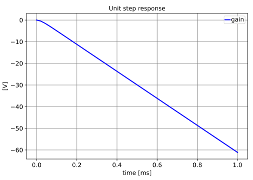

Poles and zeros of the RC network.
DC gain = $\infty$
| pole | value [Hz] |
|---|---|
| $p_{0}$ | $\frac{- \frac{0.25 \left(C_{s} R_{i} R_{s} + L_{s}\right)}{C_{s} L_{s} R_{i}} - \frac{0.25 \left(C_{s}^{2} R_{i}^{2} R_{s}^{2} - 4 C_{s} L_{s} R_{i}^{2} - 2 C_{s} L_{s} R_{i} R_{s} + L_{s}^{2}\right)^{0.5}}{C_{s} L_{s} R_{i}}}{\pi}$ |
| $p_{1}$ | $\frac{- \frac{0.25 \left(C_{s} R_{i} R_{s} + L_{s}\right)}{C_{s} L_{s} R_{i}} + \frac{0.25 \left(C_{s}^{2} R_{i}^{2} R_{s}^{2} - 4 C_{s} L_{s} R_{i}^{2} - 2 C_{s} L_{s} R_{i} R_{s} + L_{s}^{2}\right)^{0.5}}{C_{s} L_{s} R_{i}}}{\pi}$ |
| $p_{2}$ | $0$ |
| zero | Re [Hz] | Im [Hz] | Mag [Hz] | Q |
|---|
DC gain = $\infty$
| pole | Re [Hz] | Im [Hz] | Mag [Hz] | Q |
|---|---|---|---|---|
| p1 | $0$ | $0$ | ||
| p2 | $-7.807\cdot 10^{3}$ | $7.807\cdot 10^{3}$ | ||
| p3 | $-3.386\cdot 10^{6}$ | $3.386\cdot 10^{6}$ |
| zero | Re [Hz] | Im [Hz] | Mag [Hz] | Q |
|---|

Go to A1_Ideal_controller_TF_index
SLiCAP: Symbolic Linear Circuit Analysis Program, Version 4.0.10 © 2009-2025 SLiCAP development team
For documentation, examples, support, updates and courses please visit: analog-electronics.tudelft.nl
Last project update: 2026-02-23 08:55:21